Actividad física
La actividad física se refiere a todo movimiento corporal producido por el sistema locomotor con gasto de energía. Existen diferentes dominios de actividad física como aquella que se realiza en el tiempo de ocio, el trabajo, la educación, el hogar o los desplazamientos.
Realizar actividad física de forma regular ayuda en diversos aspectos como los siguientes (OMS, 2020):
- Salud física: mejora funciones cardiorrespiratorias y musculares, la salud cardiometabólica, tensión, dislipidemia, glucosa y resistencia a la insulina, y la salud de los huesos y menor adiposidad.
- Resultados cognitivos: Mejora el desempeño académico, memoria y función ejecutiva. Saber mas sobre actividad física y aprendizaje: https://theconversation.com/aprendemos-mejor-si-nos-movemos-la-relacion-entre-el-ejercicio-fisico-y-el-aprendizaje-24847
- Salud mental: menor presencia de síntomas de depresión.
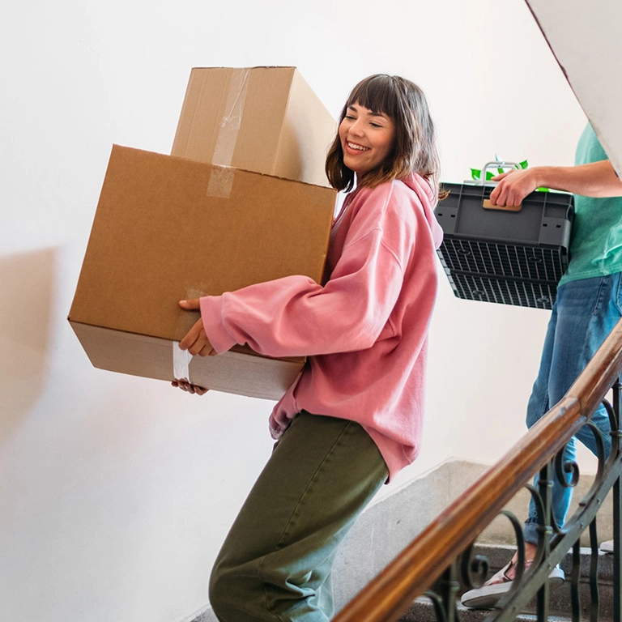
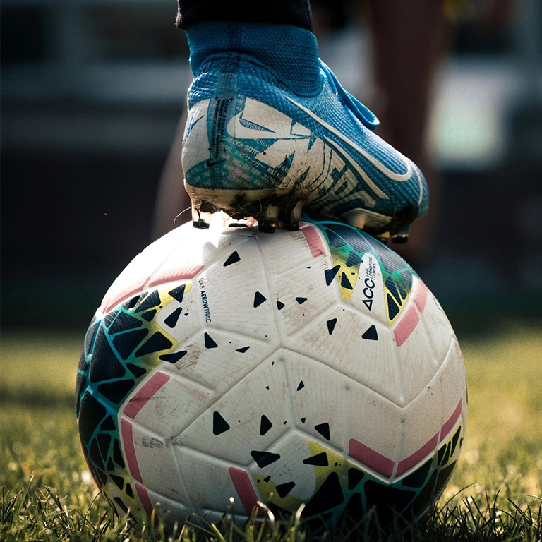
Existen diversos términos con los que se puede confundir a la actividad física como el deporte y el ejercicio.
El deporte abarca una diversidad de actividades realizadas bajo reglas, practicadas por placer o con ánimo competitivo. Las actividades deportivas consisten en actividades físicas realizadas por equipos o personas, en ocasiones con sujeción a un marco institucional (por ejemplo, un organismo deportivo).
El ejercicio es una subcategoría de actividad física que ha sido programada, es estructurada y repetitiva, y responde a un fin, en el sentido de mejorar o mantener uno o más componentes de la forma física. Los términos «ejercicio» y «entrenamiento mediante ejercicios» suelen utilizarse como sinónimos, y hacen referencia a la actividad física realizada durante el tiempo de ocio, principalmente con el fin de mejorar o mantener la forma física, el rendimiento físico o la salud.
Otras formas de realizar actividad física
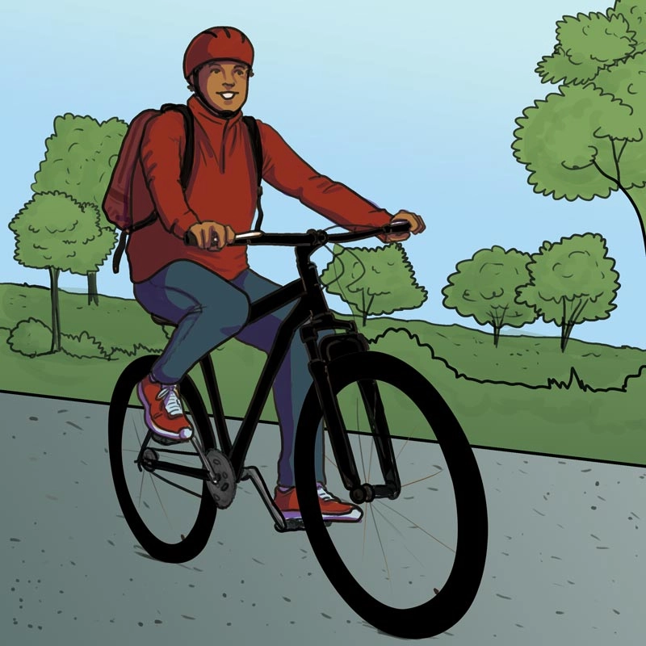
Transporte activo
Es la actividad física que se realiza para transportarse de un lugar a otro, en donde se sustituye el transporte motorizado por transportación activa. Por ejemplo, caminando, en bici o cualquier otro aditamento con ruedas que demanda movimiento del cuerpo.
Mas sobre transporte activo: https://www.isglobal.org/healthisglobal/-/custom-blog-portlet/actividad-fisica-transporte-publico-y-transporte-activo-una-combinacion-con-muchos-beneficios-para-la-salud
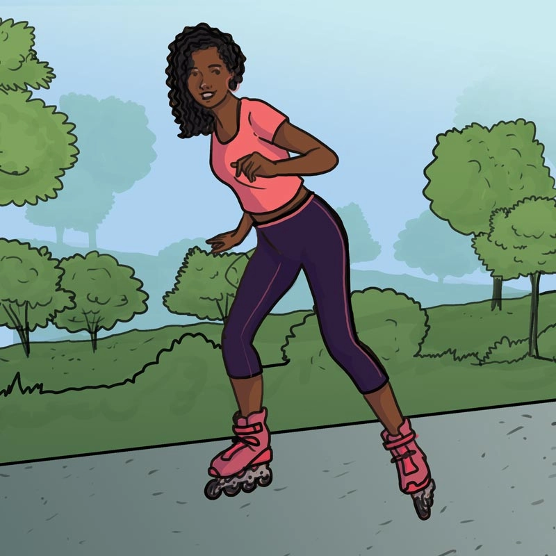
Recreativa
Refiere a todas las actividades recreativas y de tiempo libre que incluyen actividad física como asistir a un parque acuático, caminatas con mascotas o pasear en bicicleta.
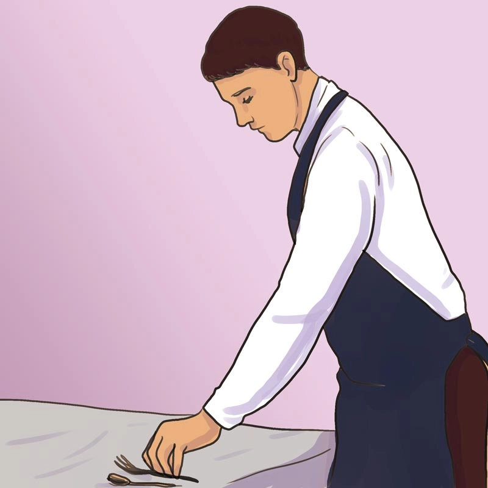
Laboral
Refiere a la actividad física que se realiza durante el trabajo, ya sea por la Naturaleza del empleo, por ejemplo, empleos de servicio en restaurantes o jardinería. También incluye actividad física intencional como realizar pausas activas o ejercicios durante la jornada laboral que es principalmente de escritorio.
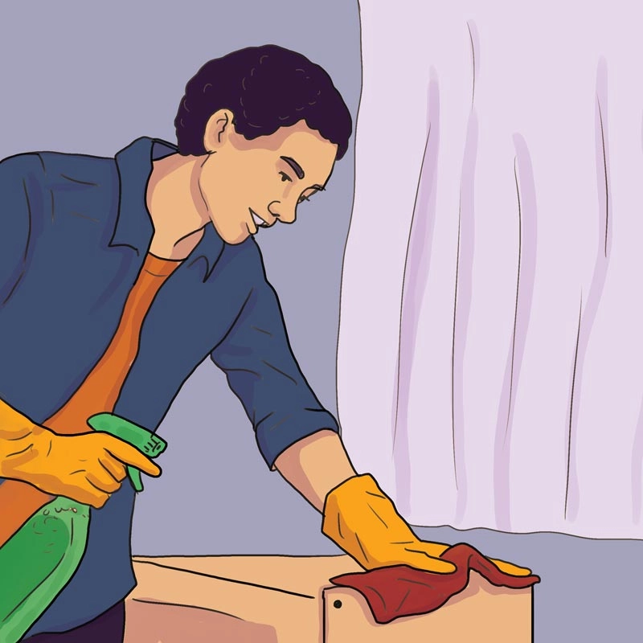
Hogar
Son actividades que se realizan en casa y que involucran el movimiento del cuerpo. Por ejemplo, barrer o podar el pasto.
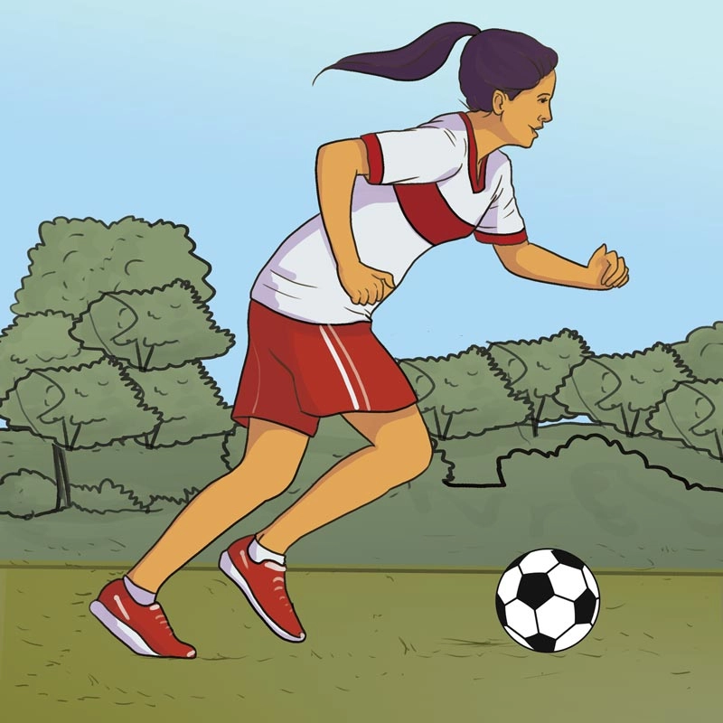
Escolar
Refiere a la actividad física que se puede realizar en la escuela. Como en la clase de educación física, juego activo en el recreo, pausas activas durante las clases y festivales que incluyan actividades físicas. También incluye actividades extracurriculares como torneos deportivos, actividades artísticas con movimiento como danza y fomento del transporte activo desde y hacia la escuela.
Actividad
Lee este texto y responde las preguntas: https://portalacademico.cch.unam.mx/recursos-de-apoyo/articulo-de-divulgacion/actividad-fisica-salud-sedentarismo
Clasificación de la actividad física
Existen dos tipos principales de actividad física la aeróbica y la anaeróbica. Ambas son muy importantes para la salud en general, aunque la aeróbica da beneficios particulares para la salud del corazón, arterias y venas, mientras que la anaeróbica para la salud de huesos y músculos.
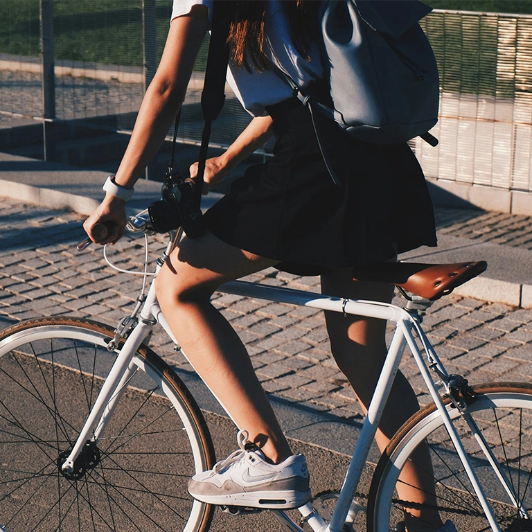
La actividad física aeróbica es en la que los grandes músculos del cuerpo se mueven rítmicamente durante un periodo de tiempo. La actividad aeróbica —denominada también «de resistencia»— mejora la capacidad cardiorrespiratoria. Ejemplos: caminar, correr, nadar, montar en bicicleta.
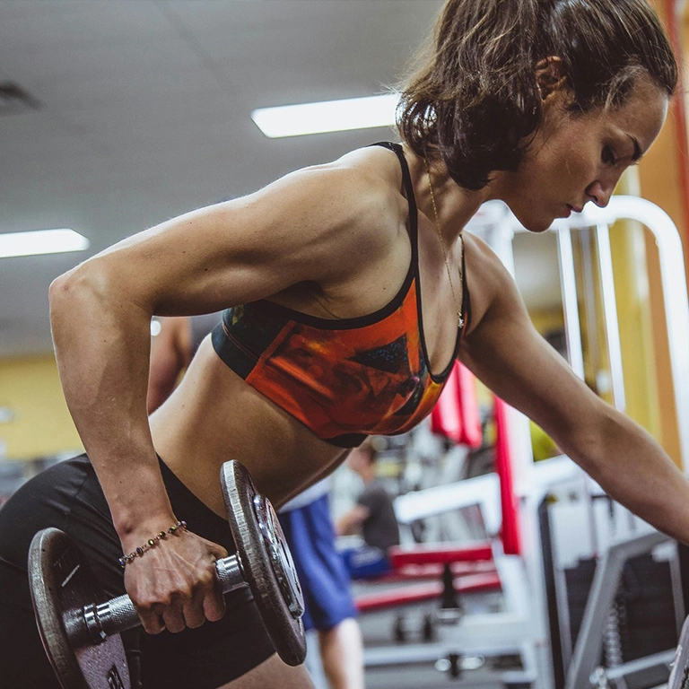
La actividad física anaeróbica refiere a un ejercicio de corta duración, pero de alta intensidad como el levantamiento de pesas y las carreras cortas y supone una demanda de oxígeno superior al aporte de oxígeno.
| Ligera | Moderada | Vigorosa |
|---|---|---|
| Se encuentra entre 1.5 y 3METS o actividades con un gasto, es decir, actividades con un costo energético inferior a tres veces el gasto energético en reposo de esa persona. Esto puede incluir caminar despacio, bañarse u otras actividades que no resulten en un aumento considerable de la frecuencia cardíaca o la tasa de respiración. | Se realiza entre 3 y menos de 6 veces la intensidad del reposo. En una escala relativa a la capacidad personal de un individuo, la actividad física de intensidad moderada generalmente se clasifica como un 5 o 6 en una escala de 0 a 10. | La actividad física vigorosa es la que se realiza con una intensidad de ≥ 6 MET. En una escala relativa vinculada a la capacidad de cada persona, la actividad vigorosa suele puntuar entre siete y ocho en una escala de 0 a 10. |
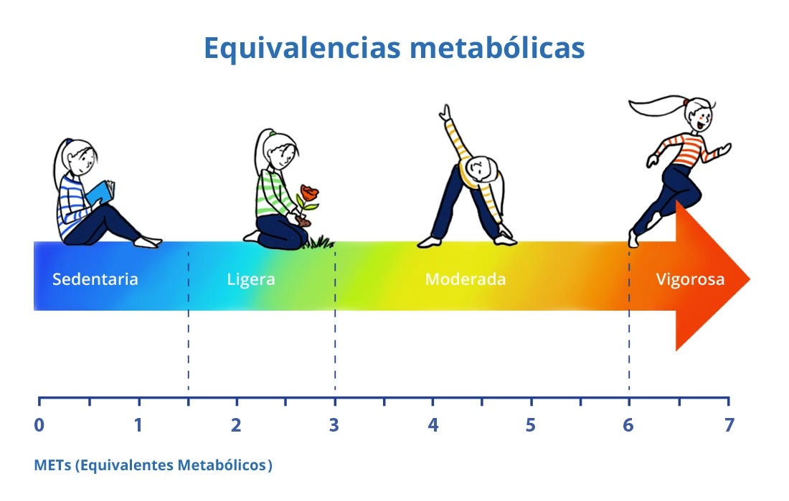
El equivalente metabólico de la tarea, o simplemente equivalente metabólico, es una medida fisiológica que expresa la intensidad de las actividades físicas. Si quieres saber más sobre los METs visita: https://gaceta.cch.unam.mx/es/como-calcular-el-met
¿Cuánta actividad física se debe realizar?
La actividad física que las personas deberíamos de realizar para gozar de los beneficios para la salud varía según nuestra edad. La Organización Mundial de la Salud ha emitido recomendaciones que aplican a todas las personas, además en algunos países se cuentan con recomendaciones nacionales. En México las recomendaciones están en proceso de desarrollo (Ver https://insp.mx/avisos/guias-de-actividad-fisica-sedentarismo-y-sueno-para-la-poblacion-mexicana) . Mientras las guías nacionales no entren en vigor, la mejor opción es seguir las recomendaciones de la Organización Mundial de la Salud. A continuación, se detallan las recomendaciones para la población adolescente, además podrás consultar las del resto de los grupos de edad, etapas de la vida (ej. Embarazo) y condiciones de salud (ej. Enfermedades crónicas, discapacidad) en este sitio https://www.who.int/es/publications/i/item/9789240014886
Adolescentes deben acumular todos los días 60 minutos de actividad física de intensidad moderada a vigorosa (OMS, 2020).
Recomendaciones de la OMS respecto a actividad física para niños y adolescentes
(Organización Mundial de la Salud, 2020)

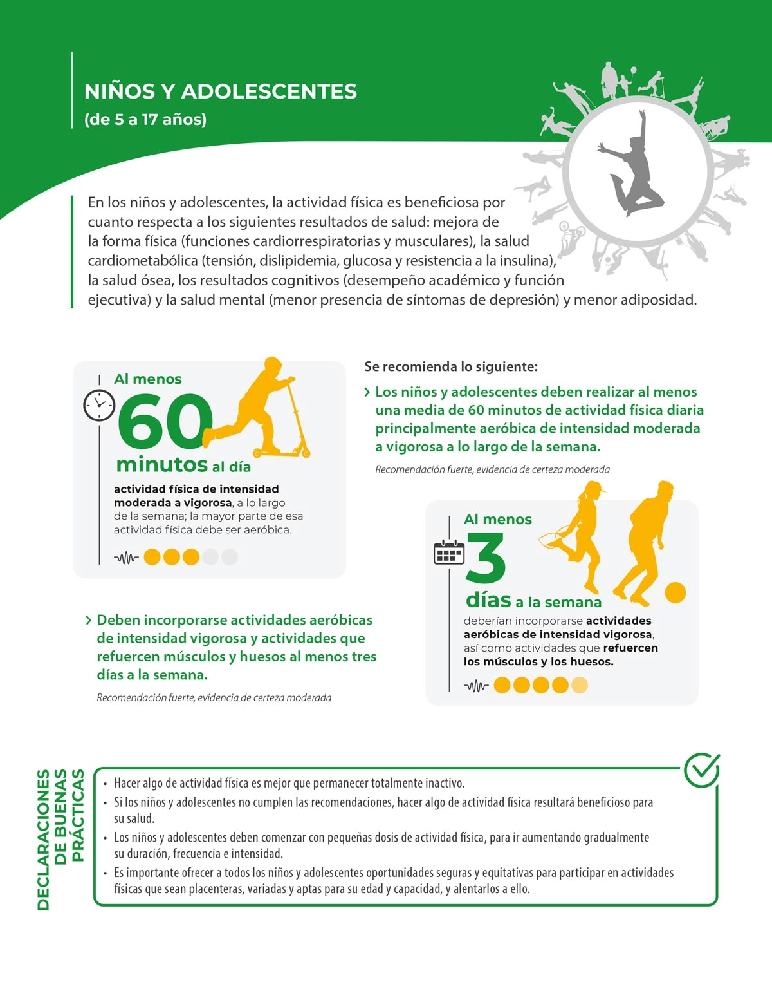
Inactividad física
Nivel insuficiente de actividad física para cumplir con las recomendaciones actuales de actividad física. En el caso de la población adolescente se refiere a realizar menos de 60 minutos diarios de actividad física de intensidad moderada a vigorosa.
El 35.9% de la población adolescente en México no cumplen con las recomendaciones de Actividad física de la OMS y que las adolescentes femeninas son las que tienen menos probabilidad de cumplir con las recomendaciones de actividad física (Medina et al., 2025)
Existen diversas barreras que puedes enfrentar para realizar actividad física, por ejemplo las tareas escolares, la preferencia por otras actividades, horarios de clase, distancia de desplazamiento, acceso a deportivos o áreas en tu colonia, actividades sin costo disponibles, el apoyo de la familia o el estilo de enseñanza del profesor/a de educación física. (Argumedo et al., 2024)
Por lo que desde la Sociedad Internacional de Actividad Física y Salud se han establecido al menos 8 acciones que a nivel personal, local o nacional se pueden hacer para fomentar estilos de vida físicamente activos. (International Society for Physical Activity and Health (ISPAH), 2020).
Actividad
Lee con atención el texto “Las ocho inversiones para promover la actividad física”. Identifica cada situación y selecciona la inversión que corresponde. Después de responder, utiliza la retroalimentación para reflexionar por qué esa opción es correcta.
Como hemos revisado hasta ahora la actividad física es mejor conocida por sus beneficios en la salud de las personas, sin embargo, estudios recientes muestran que también ayuda a la comunidad, las sociedades y el medio ambiente. Por ejemplo, cuando te transportas de forma activa, por ejemplo, en bicicleta o caminando reduces las emisiones de contaminación que se produce cuando lo haces por medio de transporte motorizado. Esta es una de las formas en las que realizar actividad física ayuda al desarrollo sostenible.
Actividad
Realiza la siguiente lectura Actividad física y medio ambiente y organiza los medios de transporte según su nivel de sustentabilidad.